Timeline
January 2025 – May 2025
Hats Worn
UX/UI Design
Visual Design
UX Research
Team
Interaction Design
Tools
Figma
FigJam
Canva
Adobe Illustrator
Problem Statement:
Adoption from the Texas foster care system presents significant challenges for prospective adoptive parents, with approximately 12,639 children currently waiting to be adopted. Many foster-adopt families lack supportive resources and struggle to navigate the complexities of the adoption process, leading to fewer successful adoptions.
The Mission:
In 2022, Texas faced significant hurdles, with nearly 20,000 children in custody, over half of whom were waiting for a permanent home, emphasizing the need for improved guidance and support for adoptive families.
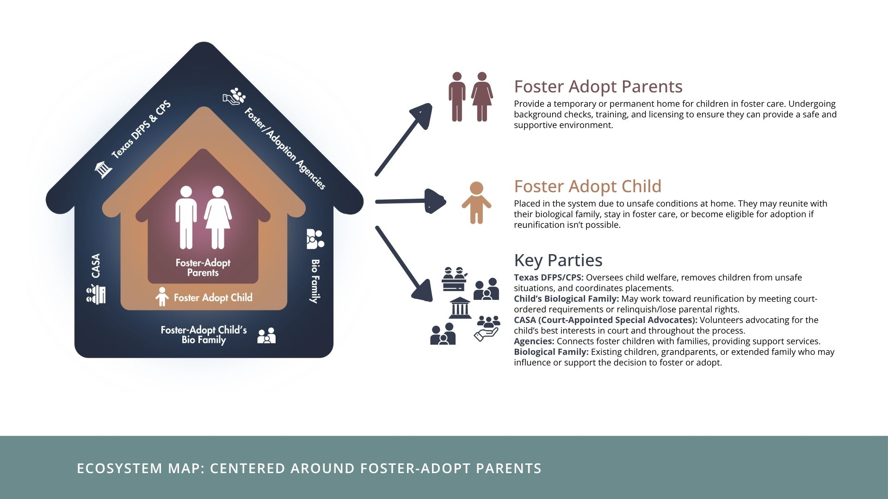
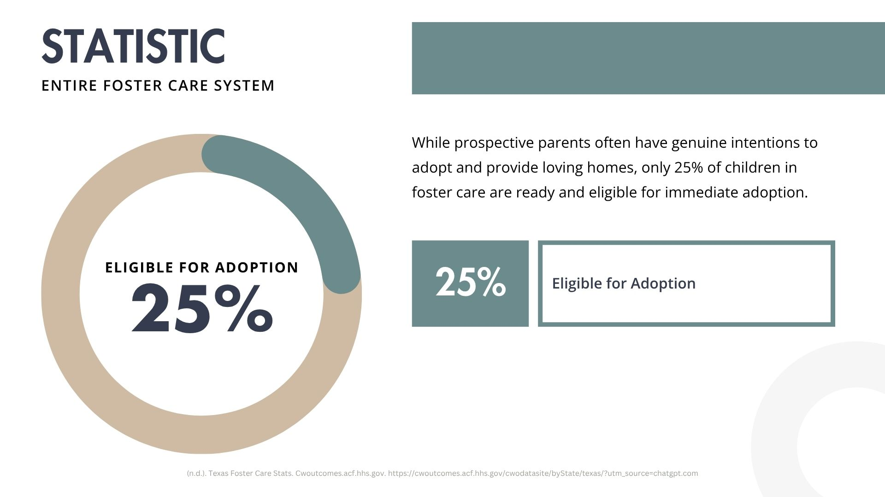
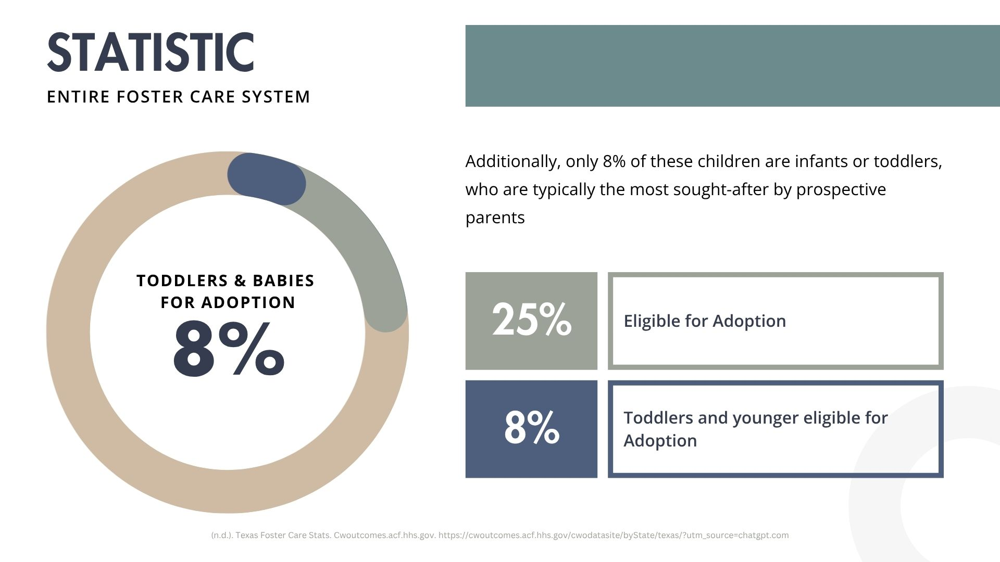
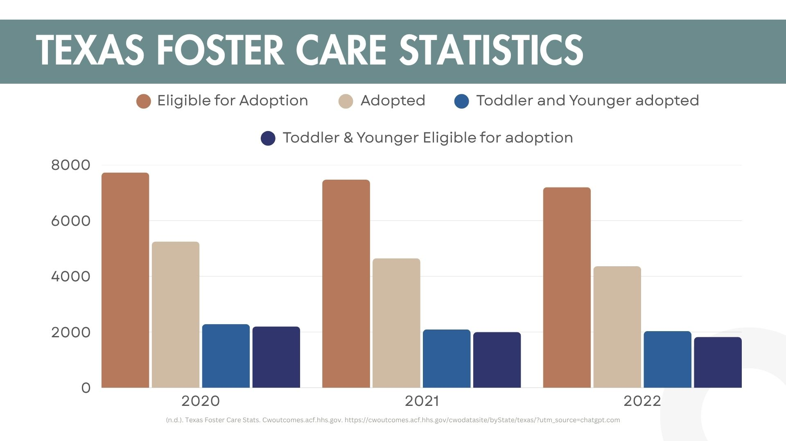
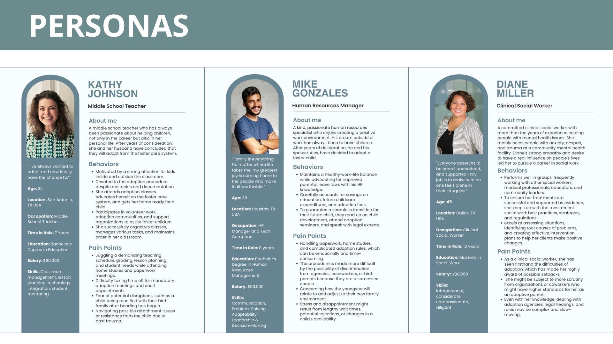
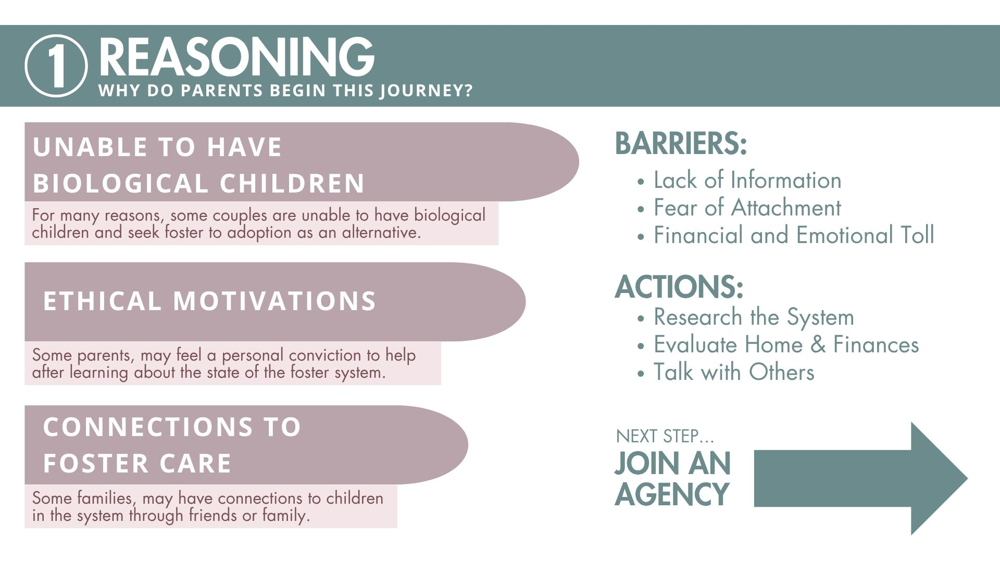
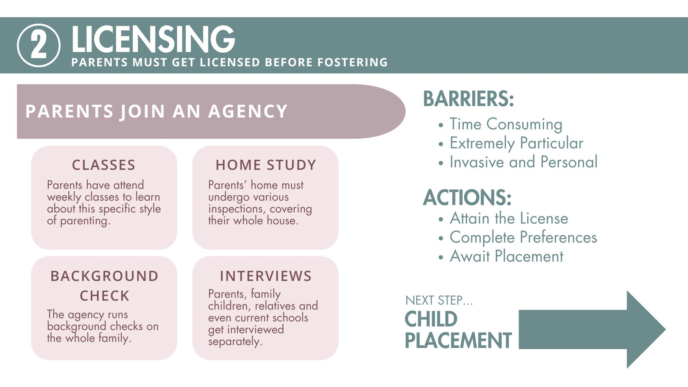
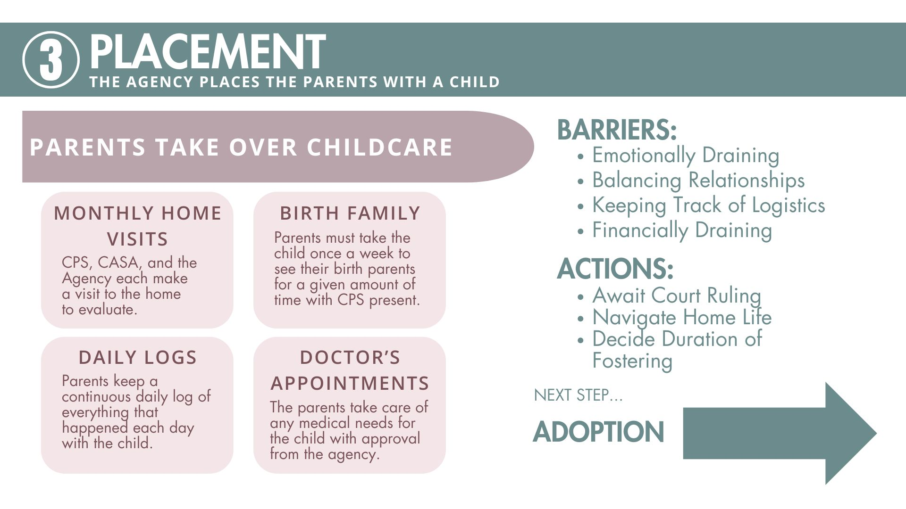
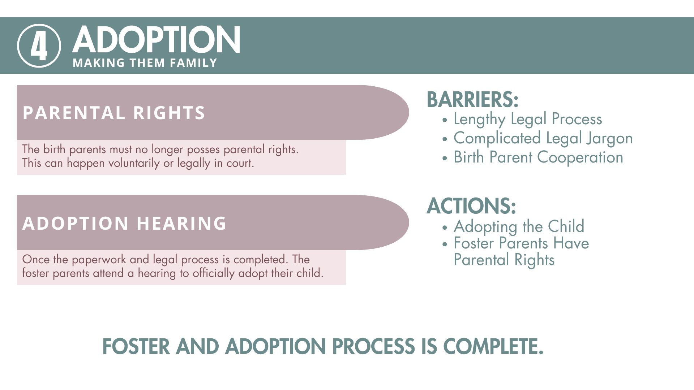
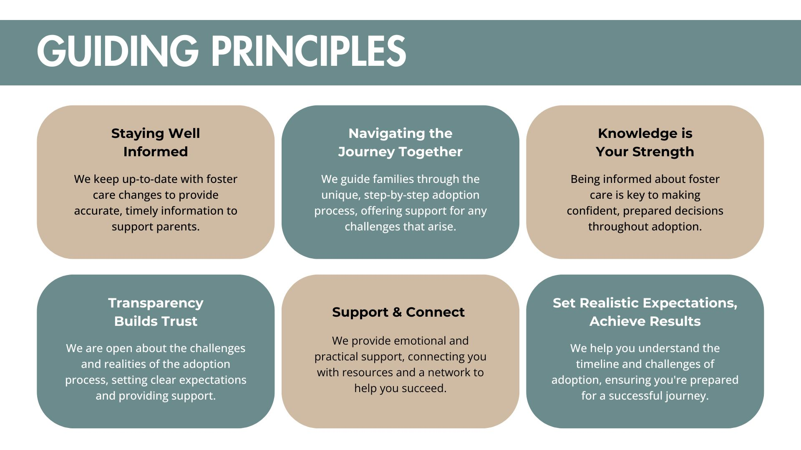
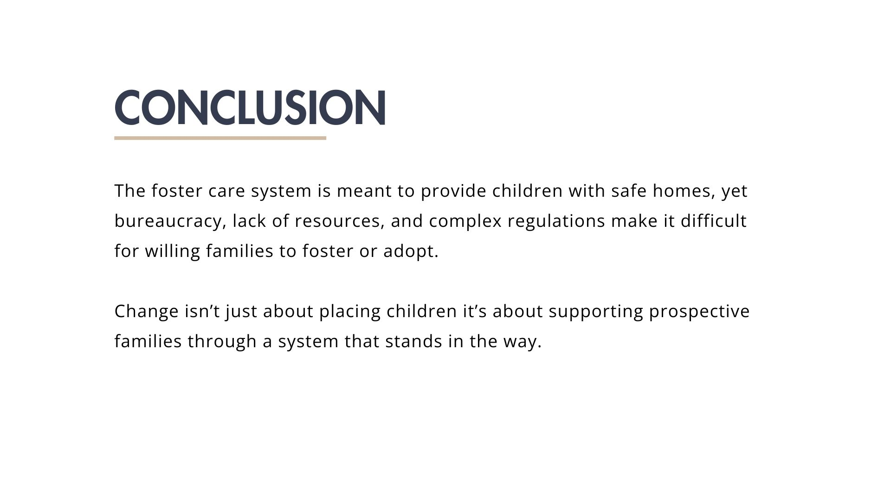
LOW FIDELITY PROTOTYPE
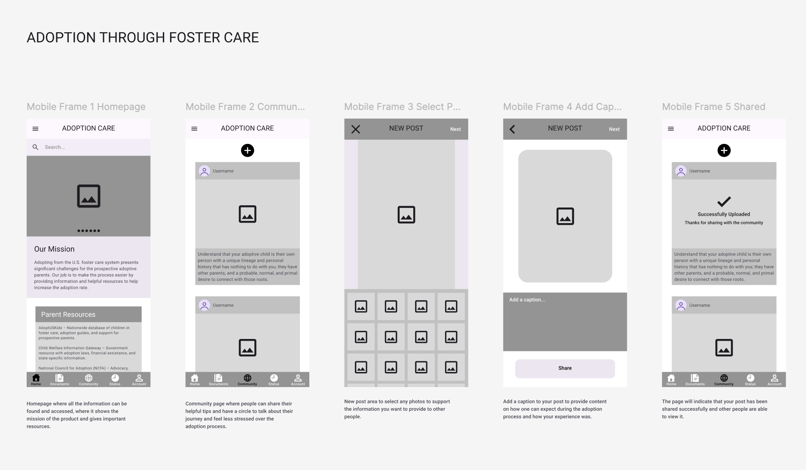
USER FLOW
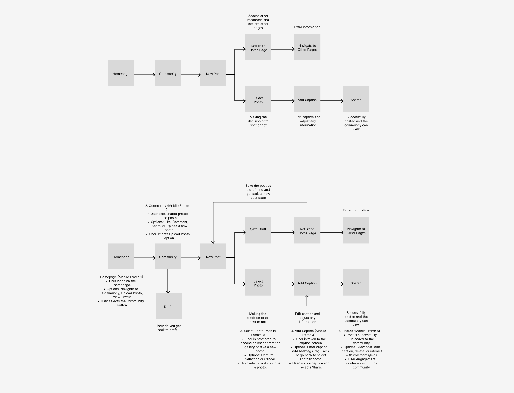
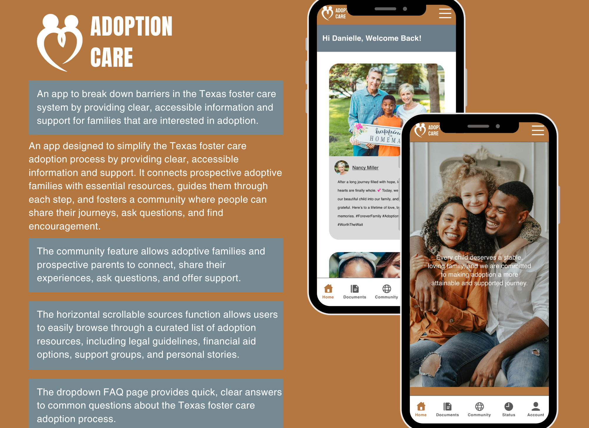
FUNCTIONS
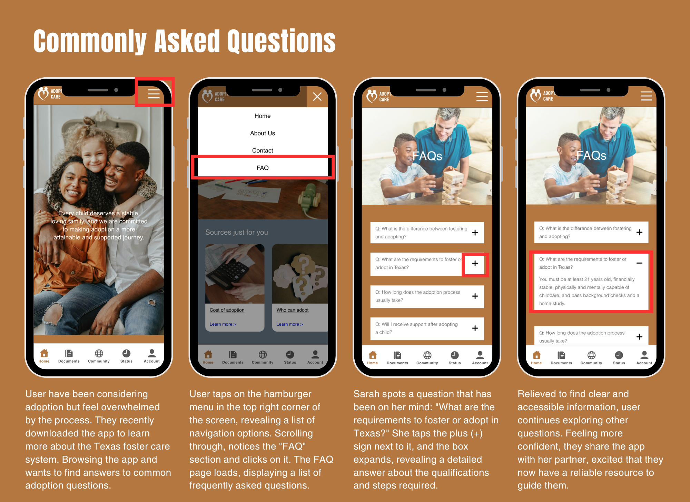
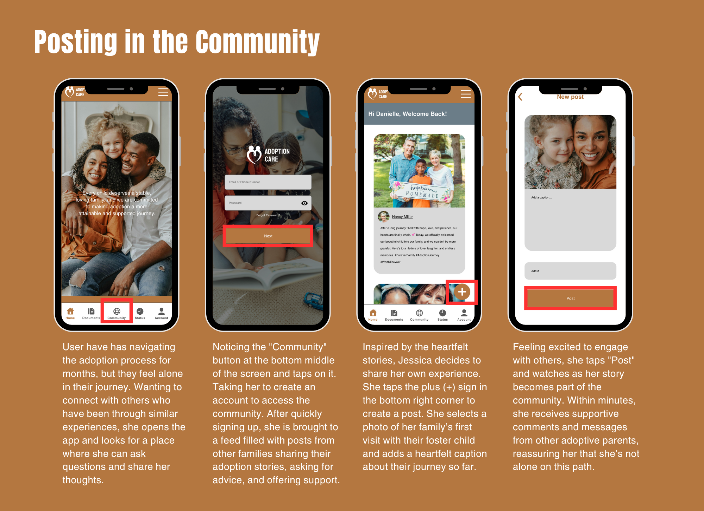
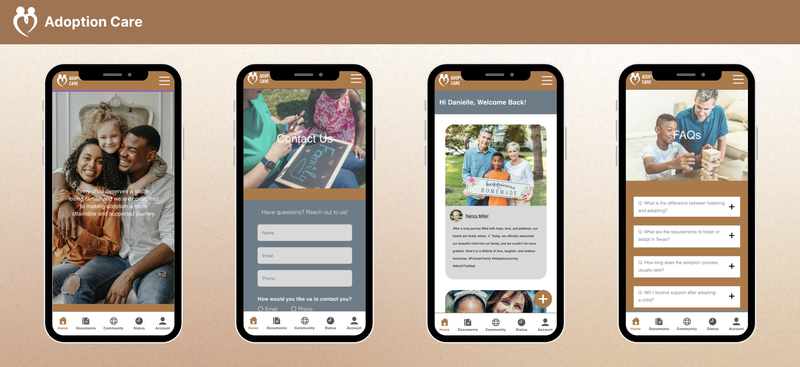
PERSONAL STATEMENT
"When I started brainstorming, I knew that I wanted to do something that could make a difference in people's lives. I started looking into the foster care system in Texas, and I was absolutely shocked at how complex and overwhelming the adoption process can potentially be for families. That's when I came up with the concept of an adoption support app that breaks down barries, makes information more accessible, and offers a supportive environment for families. Then I wrote down some of the key features like daily mood tracking, bonding activities, and a resource center, all designed to bring parents and children closer together and adapt. The longer I worked on it, the more I realized how important it was to create something that was welcoming, clean, and emotionally supportive throughout the process."